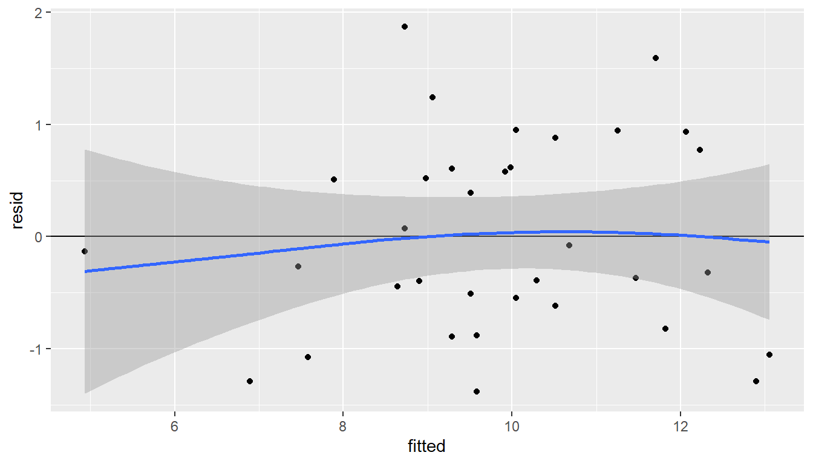

Peatükk 7 Mitme tunnuse koosanalüüs
7.1 Lineaarne regressioon
Lineaarne regressioon on üks viis, kuidas uurida, kuidas kaks või enam asja on omavahel seotud. Selle abil saame aru saada, kuidas ühe tunnuse muutumine mõjutab teist. Näiteks, kui me teame, kuidas ühe tunnuse väärtus muutub, saame ennustada, mis võib juhtuda teise tunnusega.
Lineaarne regressioon lähtub eeldusest, et kahe asja vaheline suhe on sirgejooneline. See tähendab, et kui üks tunnus muutub, siis teine asi muutub kindlal viisil, mida saab joonistada sirgjoonena. Selle meetodi eesmärk on leida kõige sobivam sirgjoon, mis näitab, kuidas need kaks tunnust on omavahel seotud. Lineaarse regressiooni mudeli võib esitada võrrandina:
\[Y = a + bX + \epsilon \]
Kus:
- Y on sõltuv muutuja (ennustatav muutuja)
- X on sõltumatu muutuja (ennustav muutuja)
- a on lõikepunkt, mis näitab, kui suur on Y väärtus, kui X väärtus on 0
- b on regresseerimiskordaja, mis näitab, kui palju muutub Y väärtus, kui X väärtus suureneb ühe ühiku võrra
- \(\epsilon\) on veaväärtus, mis tähistab juhuslikke kõrvalekaldeid mudelist
Lineaarse regressiooni puhul kasutatakse mitmesuguseid meetodeid, et hinnata, kui hästi meie sirgjoon mudelina toimib. Üks selline meetod on vähim ruutude meetod. See tähendab, et me otsime sirgjoont, mis käitub nii, et meie ennustuste ja tegelikkuses mõõdetud väärtuste erinevused oleksid võimalikult väikesed. Lihtsamalt öeldes, me püüame leida sirgjoont, mis sobib kõige paremini meie andmetega, minimeerides vigu ennustustes.
7.1.1 Eeldused
Lineaarse regressiooni usaldusväärsed tulemused sõltuvad teatud eeldustest. Need eeldused aitavad tagada, et meie analüüs peegeldaks tegelikkust võimalikult täpselt. Siin on need eeldused lihtsustatult:
Lineaarsus: eeldatakse, et kahe muutuja vaheline suhe on otsejooneline. See tähendab, et kui üks muutuja muutub, siis teise muutuja vastus on alati samasugune, sõltumata olukorrast.
Normaaljaotus: vead või ennustuste ja tegelike tulemuste erinevused järgivad kindlat mustrit, mis sarnaneb kella kujuga jaotusele, kus enamik tulemusi koonduvad keskele.
Homoskedastilisus: sõltuva muutuja väärtuste hajuvus või laialivalguvus on ühtlane kogu sõltumatu muutuja ulatuses, mis tähendab, et erinevused ei suurene ega vähene sõltumatu muutuja väärtuse kasvades.
Autokorrelatsiooni puudumine: vaatluste vead on omavahel sõltumatud, st et ühe vaatluse viga ei mõjuta teise vaatluse viga.
Multikollineaarsuse puudumine: analüüsitavad muutujad on sõltumatud, st ühe muutuja väärtus ei sõltu teise muutuja väärtusest ega ole nendega liiga tihedalt seotud.
Need eeldused aitavad tagada, et lineaarse regressiooni mudel oleks usaldusväärne ja et selle abil tehtud järeldused peegeldaksid tegelikke seoseid.
7.1.2 Väljund ja hinnangud
Lineaarne regressioon on statistiline meetod, mis võimaldab hinnata kahe muutuja vahelist seost ning ennustada ühe muutuja väärtust teise muutuja põhjal. Lineaarse regressiooni väljundit hindamisel on olulised järgmised näitajad:
- Regressioonivõrrand: see on võrrand, mis kirjeldab kahe muutuja vahelist seost. Näiteks võib see välja näha järgmiselt: Y = a + bX, kus Y on sõltuv muutuja, X on sõltumatu muutuja, a on konstantne liige ja b on regresioonikordaja.
- Regressioonikordaja (b): see näitab, kui palju sõltuv muutuja (Y) keskmist väärtust muutub ühe ühiku võrra sõltumatu muutuja (X) kasvades.
- Konstantne liige (a): see on punkt, kus regressioonijoon lõikab Y-telge (X = 0).
- Korrelatsioonikordaja (R): see näitab, kui hästi regressioonimudel sobitub tegelikele andmetele. Väärtused võivad varieeruda vahemikus -1 kuni 1, kus lähemal 1-le tugineb mudel andmetele paremini.
Kindlasti, siin on näide, kuidas teha R-i keskkonnas lineaarset regressiooni ning lugeda andmed failist “puud.xlsx”:
Loeme andmed failist “puud.xlsx” ja salvestame selle dataframe’i:
Teeme lineaarse regressiooni muutujate D ja H vahel:

Vaatame väljundit:
##
## Call:
## lm(formula = H ~ D1, data = mudelpuud)
##
## Residuals:
## Min 1Q Median 3Q Max
## -2,75109 -1,13190 -0,09022 1,01766 2,96592
##
## Coefficients:
## Estimate Std. Error t value Pr(>|t|)
## (Intercept) 16,21920 0,86199 18,816 < 2e-16 ***
## D1 0,33648 0,03503 9,605 9,31e-13 ***
## ---
## Signif. codes: 0 '***' 0,001 '**' 0,01 '*' 0,05 '.' 0,1 ' ' 1
##
## Residual standard error: 1,379 on 48 degrees of freedom
## Multiple R-squared: 0,6578, Adjusted R-squared: 0,6506
## F-statistic: 92,26 on 1 and 48 DF, p-value: 9,315e-13Lineaarse regressioonimudeli kokkuvõte sisaldab mitmeid olulisi statistilisi näitajaid, mis aitavad hinnata mudeli sobivust andmetele.
Determinatsioonikordaja, tuntud ka kui \(R^2\) (R-ruut), on statistiline mõõdik, mida kasutatakse lineaarse regressiooni kontekstis, et hinnata, kui suures ulatuses sõltuva muutuja variatsioon on seletatav sõltumatute muutujate abil mudelis. \(R^2\) väärtus varieerub vahemikus 0 kuni 1, kus 0 tähendab, et mudel ei seleta sõltuva muutuja variatsiooni üldse, samas kui 1 tähendab, et mudel seletab sõltuva muutuja variatsiooni täielikult.
\(R^2\) arvutamiseks kasutatakse järgmist valemit:
\[ R^2 = 1 - \frac{\text{SS}_\text{res}}{\text{SS}_\text{tot}} \]
kus:
- \(\text{SS}_\text{res}\) on jääkide ruutude summa (residual sum of squares), mis mõõdab mudeli poolt seletamata variatsiooni.
- \(\text{SS}_\text{tot}\) on kogu variatsiooni ruutude summa (total sum of squares), mis mõõdab sõltuva muutuja variatsiooni võrreldes tema keskmisega.
Kõrge \(R^2\) väärtus (lähedane 1-le) näitab, et mudeli poolt seletatav variatsioon on suur, mis tähendab, et mudel sobib andmetele hästi. See viitab sellele, et suur osa sõltuva muutuja variatsioonist on seletatav mudeli sõltumatute muutujatega.
Madal \(R^2\) väärtus (lähedane 0-le) näitab, et mudel seletab sõltuva muutuja variatsioonist väikese osa, mis tähendab, et mudeli sobivus andmetele on kehv. See võib viidata sellele, et mudelis kasutatavad sõltumatud muutujad ei ole sõltuva muutuja variatsiooni seletamisel tõhusad.
Oluline on mõista, et kuigi \(R^2\) on kasulik mõõdik mudeli sobivuse hindamisel, ei tähenda kõrge \(R^2\) automaatselt, et mudel on õige või et sõltumatud muutujad põhjustavad sõltuva muutuja käitumist. Samuti ei pruugi madal \(R^2\) alati tähendada mudeli ebatõhusust, eriti keerukamate või mittelineaarsete suhete puhul. Lisaks tuleks mudeli hindamisel arvesse võtta ka muid tegureid, nagu mudeli tõlgendatavus, sõltumatute muutujate olulisus ja korrigeeritud \(R^2\).
Lineaarse regressiooni nihutamata hinnang, tuntud ka kui korrigeeritud \(R^2\) (inglise keeles “adjusted \(R^2\)”), on statistiline mõõdik, mida kasutatakse mudeli seletusvõime hindamiseks, võttes arvesse mudeli sõltumatute muutujate arvu. Erinevalt lihtsast \(R^2\)-st, mis mõõdab, kui suur osa sõltuva muutuja variatsioonist on seletatav mudeli abil, arvestab korrigeeritud \(R^2\) mudeli keerukust, arvestab mudeli liigsete sõltumatute muutujate lisamise eest. See on oluline, kuna mudelisse liiga palju muutujaid lisades võib \(R^2\) väärtus eksitavalt tõusta, viidates paremale mudeli sobivusele, kuigi tegelikult võivad lisatud muutujad olla statistiliselt mitteolulised.
Korrigeeritud \(R^2\) arvutatakse järgmise valemi järgi:
\[ R^2_{\text{adj}} = 1 - \left( \frac{(1 - R^2)(n - 1)}{n - k - 1} \right) \]
kus:
- \(R^2\) on mudeli lihtne determinatsioonikoefitsient,
- \(n\) on vaatluste arv,
- \(k\) on sõltumatute muutujate arv mudelis.
Valemist nähtub, et \(R^2_{\text{adj}}\) väheneb, kui lisatakse muutujaid, mis ei paranda mudeli seletusvõimet proportsionaalselt nende arvuga. Seega, erinevalt lihtsast \(R^2\)-st, pakub korrigeeritud \(R^2\) ausamat hinnangut mudeli sobivusele, eriti kui võrrelda mudeleid, mis sisaldavad erinevat arvu sõltumatuid muutujaid. Korrigeeritud \(R^2\) on eriti kasulik mudelite võrdlemisel ja mudeli valimisel, aidates vältida ülemudelitamist ja eelistades mudelit, mis annab parima tasakaalu seletusvõime ja keerukuse vahel.
P-väärtused näitavad, kas sõltumatu muutuja on statistiliselt oluline mudelis. Kui P-väärtus on väiksem kui 0,05, siis võib järeldada, et sõltumatu muutuja mõjutab oluliselt sõltuvat muutujat.
Regressioonikordaja väärtused annavad teavet sõltumatute muutujate mõju kohta sõltuvale muutujale.
Kokkuvõttes aitab väljund mõista, kuidas mudel sobitub andmetega ja millist infot see pakub sõltuvate ja sõltumatute muutujate seoste kohta.
7.1.3 Homoskedastilisuse testimine
Homoskedastilisuse ehk veakvoodi püsimise kontrollimine on oluline samm lineaarse regressioonimudeli sobivuse hindamisel. Alljärgnevalt on näide, kuidas kontrollida lineaarse regressioonimudeli homoskedastilisust:
Jääkide vs ennustatud väärtused graafik: Üks lihtsamaid viise homoskedastilisuse hindamiseks on vaadata lineaarse regressioonimudeli residuaalide (veaväärtused) ja ennustatud väärtuste suhet. Ideaalis peaksid residuaalide hajuvus olema ühtlane kõikide ennustatud väärtuste juures. Graafiku kasutamine aitab visuaalselt hinnata, kas veakvoodi eeldus on täidetud.

Joonis 7.1: Jäägid vs ennustatud
Lineaarse mudeli homoskedastilisuse testida, võid kasutada ka Breush-Pagan testi või White’i testi. Need testid hindavad, kas residuaalide varieeruvus on seotud sõltumatute muutujatega ning kas see varieeruvus on ühtlane.
##
## studentized Breusch-Pagan test
##
## data: lm_model
## BP = 0,55976, df = 1, p-value = 0,4544lmtest::bptest testib regressioonimudeli jääkide heteroskedastsuse olemasolu. Heteroskedastsus tähendab, et jääkide varieeruvus ei ole konstantne üle kõigi sõltumatute muutujate väärtuste ning võib tekitada probleeme statistiliste hüpoteeside testimisel.
Testi tulemusi võib lugeda järgmiselt:
- Nullhüpotees (H0): jääkide varieeruvus on konstantne (st heteroskedastsust ei esine).
- Alternatiivhüpotees (H1): jääkide varieeruvus ei ole konstantne (st heteroskedastsus esineb).
Testist saadav p-väärtus aitab hinnata, kas on piisavalt tõendeid, et lükata ümber nullhüpotees heteroskedastsuse puudumise kohta. Väike p-väärtus (<0,05) viitab sellele, et saame nullhüpoteesi ümber lükata ja järeldada, et heteroskedastsust esineb.
7.1.4 Jääkide normaalsuse test
Üks oluline eeldus, mida lineaarses regressioonis kasutatakse, on see, et mudeli jäägid (residuaalid) vastaksid normaaljaotusele. Normaaljaotus tähendab, et andmete jaotus on sümmeetriline ning keskmise jaotusega. Miks on oluline, et lineaarse regressiooni jäägid vastaksid normaaljaotusele?
Parimate tulemuste saamiseks: Kui jäägid on normaaljaotusele lähedased, siis on regressioonimudeli ennustused usaldusväärsemad ja täpsemad.
Statistiliste testide usaldusväärsus: Paljud statistilised testid eeldavad, et andmed vastavad normaaljaotusele. Kui jäägid ei vasta normaaljaotusele, võivad testide tulemused olla ebatäpsed või valed.
Mudeli hindamine: Normaaljaotuse eelduse rikkumine võib viidata sellele, et mudel ei sobi antud andmetele hästi ning on vajalik leida alternatiivseid mudeleid.
Väljendusrikas graafiline analüüs: Normaliseeritud jääkide graafik (residual plot) on üks viis, kuidas hinnata, kas jäägid vastavad normaaljaotusele. See graafik aitab visualiseerida, kas jäägid on juhuslikult hajutatud ümber nulli ja kas nende jaotus on ligilähedane normaaljaotusele.
Järgmiseks loo qqplot, kasutades arvutatud residuaale:

Samuti saab vaadata jääkide jagunemist tihedusfunktsiooni abil koostatud graafikul.

Joonis 7.2: Jääkide tihedusfunktsioon
Kui kõik on korrektselt tehtud, siis peaksid residuaalidest koostatud qq-ploti punktid paiknema peaaegu ideaalselt joone lähedal, mis näitab, et residuaalide jaotus on normaalne.
Sellise protseduuri abil saad hinnata, kui hästi sobib loodud lineaarne regressioonimudel sinu andmetele ning kas residuaalide jaotus vastab normaalsuse eeldusele.
## Analysis of Variance Table
##
## Response: H
## Df Sum Sq Mean Sq F value Pr(>F)
## D1 1 175,406 175,406 92,257 9,315e-13 ***
## Residuals 48 91,261 1,901
## ---
## Signif. codes: 0 '***' 0,001 '**' 0,01 '*' 0,05 '.' 0,1 ' ' 1## 2,5 % 97,5 %
## (Intercept) 14,4860581 17,952339
## D1 0,2660461 0,406918R-is on võimalik lihtalt lisada mudelisse täiendavad tunnuseid, mis arvutakse mudeli arvutamise käigus. Järgnevas näites on lisatud täiendav tingimus, kas puuliik on mänd (I(PL == “MA”)).
##
## Call:
## lm(formula = H ~ D1 + I(PL == "MA"), data = mudelpuud)
##
## Residuals:
## Min 1Q Median 3Q Max
## -2,2692 -0,8618 -0,1132 0,8078 3,5883
##
## Coefficients:
## Estimate Std. Error t value Pr(>|t|)
## (Intercept) 15,85715 0,85115 18,630 < 2e-16 ***
## D1 0,36250 0,03609 10,046 2,76e-13 ***
## I(PL == "MA")TRUE -0,93425 0,44736 -2,088 0,0422 *
## ---
## Signif. codes: 0 '***' 0,001 '**' 0,01 '*' 0,05 '.' 0,1 ' ' 1
##
## Residual standard error: 1,333 on 47 degrees of freedom
## Multiple R-squared: 0,6868, Adjusted R-squared: 0,6735
## F-statistic: 51,54 on 2 and 47 DF, p-value: 1,415e-12Antud juhul on näha, et mänd on teistest statistiliselt oluliselt erinev.
Kui aga vaadata, milline on mudelis kasutatava andmestiku esimesed read. Selles on näha, et uus arvutatud tunnus omab väärtusi TRUE ja FALSE ehk arvutamisel on need vastavalt 1 ja 0.
## H D1 I(PL == "MA")
## 5 24,0 31,3 TRUE
## 7 22,8 22,4 FALSE
## 10 20,4 18,4 FALSE
## 11 25,1 23,6 FALSE
## 12 24,8 27,4 TRUE
## 14 22,3 21,7 FALSESamasugust lähenemist on võimalik kasutada ka MS Exceli keskkonnas. Kui me soovime mingi tunnuse taseme kohta saada täpsemalt infot, siis tuleb esmalt luua uus tunnus väärtusega 0 või 1. Näiteks, võtame samad andmed MS Excelis ning lisame tunnuse OnMänd, mille väärtus on 1, kui antud puu on mänd, vastasel juhul on 0.
MS Exceli keskkonnas saab lineaarset regressiooni teha Analysis Toolpak moodulis oleva Regression protseduuriga.
7.1.5 Multikollineaarsus
Lineaarses regressioonis tähistab multikolineaarsus olukorda, kus kaks või enam sõltumatut muutujat (selgitajat) on omavahel tugevalt seotud või korreleerunud. See tähendab, et ühe selgitaja väärtusi saab suure täpsusega ennustada teiste selgitajate väärtuste põhjal. Multikolineaarsus võib olla probleemiks, sest:
Mõjutab koefitsientide hinnangute täpsust: multikolineaarsus suurendab koefitsientide hinnangute varieeruvust, mis muudab need ebastabiilseks. Väiksed muudatused andmestikus võivad tuua kaasa suuri muutusi koefitsientide hinnangutes, muutes mudeli interpretatsiooni keeruliseks.
Raskendab muutujate tähtsuse hindamist: kõrge multikollineaarsuse korral võib olla raske kindlaks teha, milline sõltumatu muutuja mõjutab sõltuvat muutujat, sest statistilised testid ei pruugi olla usaldusväärsed. See võib viia oluliste muutujate ebaõiglase kõrvalejätmiseni või ebaoluliste muutujate mudelisse lisamiseni.
Vähendab mudeli interpretatsiooni selgust: kui sõltumatud muutujad on omavahel tugevalt seotud, muutub mudeli interpretatsioon keerulisemaks, kuna keeruline on eristada iga muutuja unikaalset mõju sõltuvale muutujale.
Multikollineaarsuse tuvastamiseks lineaarses regressioonis kasutatakse tavaliselt järgmisi meetodeid:
- Korrelatsioonimatriks: Vaadeldakse sõltumatute muutujate vahelisi korrelatsioonikoefitsiente. Kõrge korrelatsioon näitab võimalikku multikollineaarsust.
- Variance Inflation Factor (VIF): VIF mõõdab, kui palju muutuja variatiivsus suureneb multikollineaarsuse tõttu. Tavaliselt peetakse VIF väärtust üle 5 või 10 viitavaks tugevale multikollineaarsusele.
- Tolerants: Tolerants on VIF-i pöördväärtus ja näitab, kui suur osa muutuja variatsioonist ei ole seletatav teiste mudeli muutujatega. Madal tolerants viitab multikollineaarsusele.
Multikollineaarsuse lahendamiseks võib kasutada mitmeid lähenemisviise, näiteks muutujate eemaldamist mudelist, muutujate kombineerimist või andmete transformeerimist. Samuti võib kasulikuks osutuda regulaarimismeetodite, nagu ridge regressioon või lasso regressioon, kasutamine, mis aitavad vähendada koefitsientide varieeruvust, karistades suuri koefitsiente.
Vaatame järgmist näidet, kus puude kõrgust ennustame mõlema diameetri alusel. Kui varasemalt oli näha, et üks diameeter on oluline, siis antud mudelid ei ole enam kumbki oluline, sest nende tunnuse vahel on korrelatsioon.
##
## Call:
## lm(formula = H ~ D1 + D2, data = mudelpuud)
##
## Residuals:
## Min 1Q Median 3Q Max
## -2,7643 -0,8498 -0,1563 0,7700 3,1419
##
## Coefficients:
## Estimate Std. Error t value Pr(>|t|)
## (Intercept) 15,95391 0,85902 18,572 <2e-16 ***
## D1 -0,05203 0,22886 -0,227 0,8211
## D2 0,40125 0,23369 1,717 0,0926 .
## ---
## Signif. codes: 0 '***' 0,001 '**' 0,01 '*' 0,05 '.' 0,1 ' ' 1
##
## Residual standard error: 1,352 on 47 degrees of freedom
## Multiple R-squared: 0,678, Adjusted R-squared: 0,6643
## F-statistic: 49,48 on 2 and 47 DF, p-value: 2,726e-12Tehes täiendavalt ANOVA, on näha, et D1, mis lineaarses regressioonis ei olnud oluline, on dispersioonanalüüsi järgi peamine varieeruvuse kirjeldaja.
## Analysis of Variance Table
##
## Response: H
## Df Sum Sq Mean Sq F value Pr(>F)
## D1 1 175,406 175,406 96,0019 6,161e-13 ***
## D2 1 5,387 5,387 2,9482 0,09255 .
## Residuals 47 85,874 1,827
## ---
## Signif. codes: 0 '***' 0,001 '**' 0,01 '*' 0,05 '.' 0,1 ' ' 1## Loading required package: car## Loading required package: carData## D1 D2
## 44,41058 44,41058Kui VIF väärtus on üle 5, siis on tunnuste vahel tugev korrelatsioon, mida saame kontrollida ka korrelatsioonimaatriksiga.
## D1 D2
## D1 1,0000000 0,9860028
## D2 0,9860028 1,0000000Sellest on näha, et need on tugevas korrelatsioonis (0,986). See mõjutab ka lineaarse regressiooni parameetrite arvutamist.
7.2 Dispersioonanalüüs
Mitmese regressioonanalüüsi korral on tegemist mudeliga, kus pidev funktsioontunnus avaldub pidevate argumenttunnuste lineaarkombinatsioonina. Dispersioonanalüüsi korral on tegemist mudelitega, kus funktsioontunnuseks on pidev tunnus, kuid argument-tunnused on diskreetsed (võivad olla nii arvulised kui ka mittearvulised). Dispersioon-analüüsi argumenttunnuseid nimetatakse faktoriteks. Ühefaktorilise dispersioonanalüüsi puhul uuritakse funktsioontunnuse sõltuvust ainult ühest faktorist. Faktori võimalikke väärtusi nimetatakse faktori tasemeteks.
Olgu üldkogum jaotatud mittelõikuvateks osadeks ehk rühmadeks faktori tasemete järgi. Öeldakse, et faktor X mõjub tunnusele Y, kui tunnuse Y keskväärtused eri rühmades on erinevad. Uurija käsutuses on valimi mõõtmisandmed, mille funktsioon-tunnuse rühmakeskmised tavaliselt erinevad. Dispersioonanalüüs on meetod, millega otsitakse vastust küsimusele, kas valimi rühma¬keskmiste erinevus on põhjustatud uuritava faktori mõjust või valimi juhuslikkusest.
Dispersioonanalüüsi võimalused ja vahendid sõltuvad oluliselt valitud mudelist ja katsekorraldusest. Kui iga faktortunnuse igal tasemel on tehtud ühepalju mõõtmisi, nimetatakse mudelit tasakaalustatuks, vastasel juhul on tegemist tasakaalustamata mudeliga. Kui mõõtmisi on tehtud faktori kõigil võimalikel tasemetel, siis nimetatakse seda fikseeritud faktoriks. Kui faktortunnusel on palju erinevaid väärtusi ja mõõdetud tasemeid vaadeldakse juhusliku valimina faktori võimalike tasemete hulgast, siis nimetatakse seda juhuslikuks faktoriks. Järgnevalt käsitleme ainult fikseeritud faktoritega mudeleid.